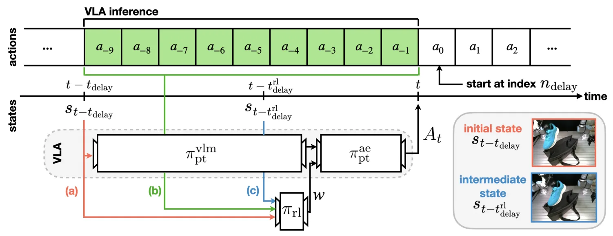
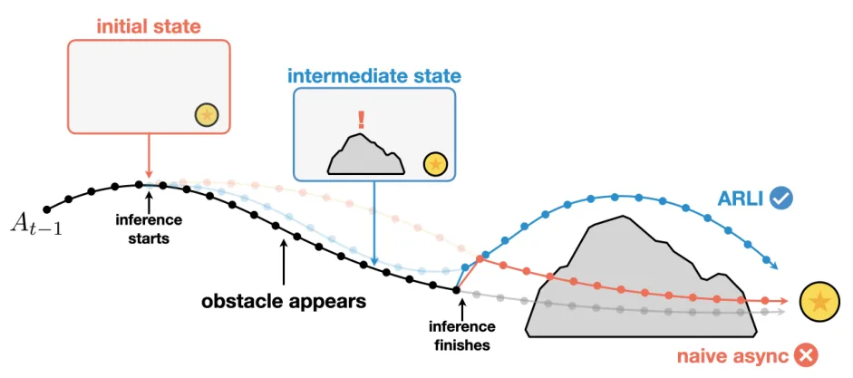
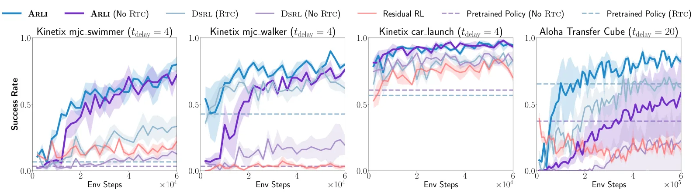
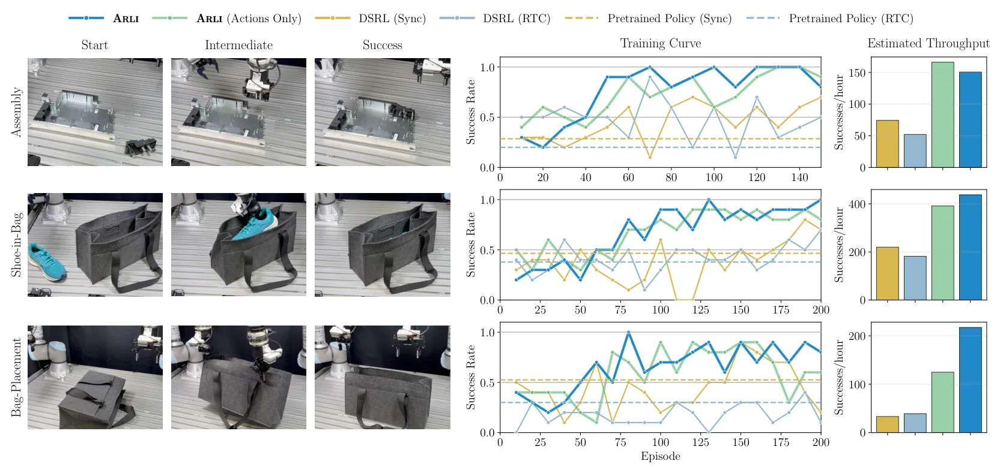

边等待边行动：考虑推理延迟的通用机器人策略强化学习微调Learning to Act While Waiting: RL Finetuning of Generalist Robot Policies Under Inference Latency
重点是策略学习而非 SLAM，但明确处理感知—推理—执行链路的时序错位，和实时机器人系统集成相关。
一句话工作总结
为视觉—语言—动作策略接入真实机器人系统提供延迟建模思路，对传感器、定位和控制链路的异步处理也有参考意义。
摘要
ARLI 框架针对大型通用机器人策略的推理延迟，将已提交动作和推理中间观测加入状态，以恢复近似 Markov 结构；同时在推理窗口中用低延迟策略维持反应性。仿真和真实操作实验显示，标准 RL 在延迟下失效时，该方法仍能有效微调，甚至接近或超过无延迟条件下的标准 RL。
While reinforcement learning (RL) allows generalist robot policies to continually improve during deployment, the large model size of modern generalist policies, such as VLAs, poses a fundamental obstacle to effective RL improvement. In particular, their severe inference latency---which can lead to pauses or jerky movements---can alter the effective environment dynamics and, if not correctly accounted for, break the Markov assumption that RL relies on, causing standard RL algorithms to fail completely. In this work, we introduce a latency-aware framework, Asynchronous RL with Intermediate Information (ARLI), that enables RL-based improvement of generalist policies under inference delays. Our framework builds on asynchronous inference approaches, which interleave action generation with execution to hide latency, and addresses its incompatibility with RL by providing a low-latency RL policy design that maximizes reactivity within the inference window through two contributions: state augmentations that restore near-Markovian structure by incorporating committed actions and a mid-inference observation. We evaluate our approach across simulated and real-world manipulation tasks, and find that it enables effective finetuning under inference delays where standard RL fails entirely, even matching or exceeding the performance of standard RL in idealized no-latency settings.
中文解读摘录
- 中文名：Luce：用于三维资产生成的可重光照高斯表示
- 方向：3DGS、三维资产生成、PBR、可重光照。
- 要点：把几何与 PBR 材质统一到体素化多模态 Gaussian cloud，用 VAE 和 rectified-flow transformer 从单图生成可重光照高斯，并可导出带法线图的纹理网格；在 Toys4K 上报告 FID 较强基线提升 28%。
- 判断：本轮三维重建候选中表示链路最完整，但不是 SLAM 算法。
图表/页面预览

{kind=link}

{kind=link}

{kind=link}

{kind=link}
